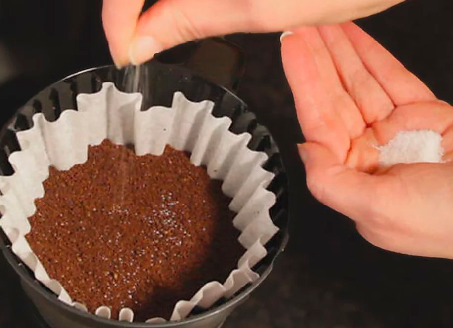

12,325 views
6,515 likes
Reading time 4 min
Article Summary
What if your morning coffee could ignite your metabolism more than hours of cardio or working out ever could?
US researcher has discovered a simple method that helps people speed up their metabolism and burn unwanted belly fat fast without extreme workout routines or diets.
We don’t know how long this video will be up as big pharma companies don't want you to know about this simple treatment but watch this video to understand how a small change in your daily routine can melt your stubborn fat. Check it now while you can.
2:53


Comments